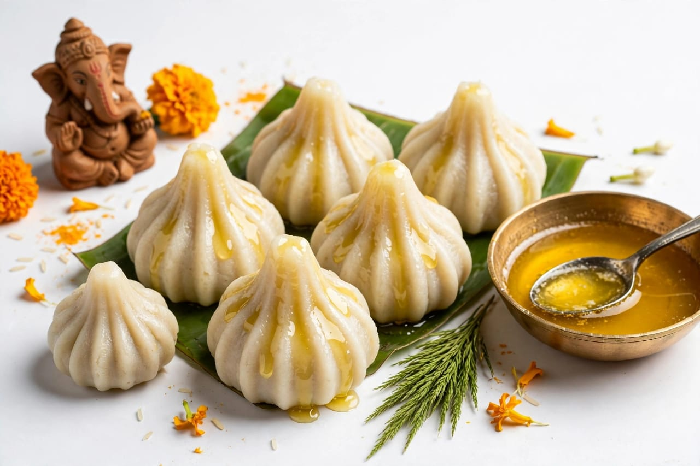
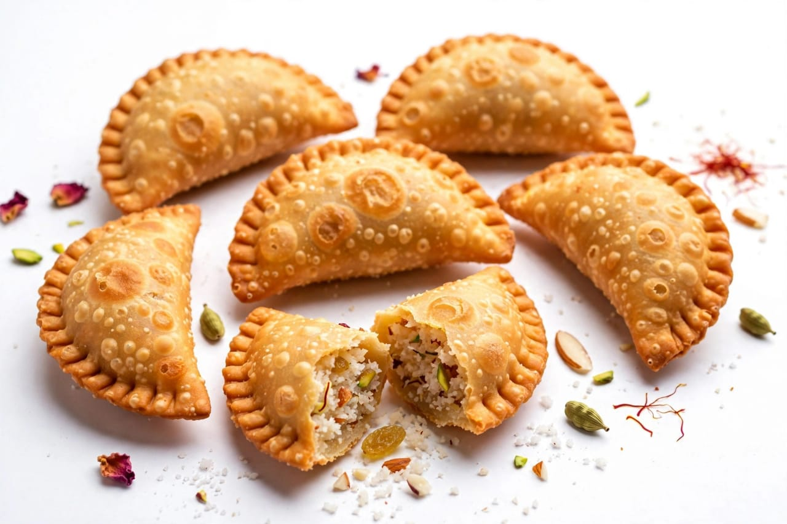

About Ganesh Chaturthi
Ganesh Chaturthi is a popular Indian festival. It is also called Ganpati festival. The festival is celebrated to honor Lord Ganesha. Lord Ganesha is one of the most loved Hindu deities. Ganesha is known as the god of wisdom. He is also associated with knowledge and new beginnings. Ganesha has an elephant head and a human body. He is usually shown with four arms. His vehicle is a mouse. Modak is traditionally associated with Lord Ganesha. Ganesh Chaturthi is celebrated in many parts of India. It is especially popular in Maharashtra. It is also celebrated in Karnataka. The festival is celebrated in Andhra Pradesh and Telangana. Many other states celebrate the festival with devotion. The festival usually begins with bringing a Ganesha idol home. People decorate their homes before bringing the idol. Flowers are used for decoration. Colorful lights are also used for decoration. People place the idol in a clean and decorated area. Devotees perform prayers before Lord Ganesha. Special prayers are offered during the festival. People offer flowers to Lord Ganesha. Fruits are also offered as part of worship. Different sweets are prepared during the festival. Modak is one of the popular sweets during Ganesh Chaturthi. Families prepare traditional food for the celebration. People wear new or traditional clothes. Families gather together during the festival. Friends and neighbors also join the celebrations. Public Ganesh idols are installed in many places. Communities decorate public celebration areas. Large idols can be seen in some public places. People organize cultural programs during the festival. Devotional songs are sung during the celebrations. Some places organize traditional dances. Processions are an important part of many celebrations. People participate in processions with devotion. Music is often played during the processions.
The festival creates a joyful atmosphere. Streets and public places may be decorated beautifully. People visit Ganesh temples during the festival. Devotees seek the blessings of Lord Ganesha. Ganesha is traditionally worshipped before starting important activities. He is associated with removing obstacles. People pray to Ganesha for success and wisdom. Students may pray to Ganesha for knowledge. Businesses may also worship Ganesha for a good beginning. The festival brings people together. It encourages community participation. It creates a feeling of unity among people. Children enjoy seeing decorated Ganesha idols. Families teach children about the importance of the festival. Many people participate in charitable activities during the festival. Some communities organize food distribution. People may also organize social service activities. The festival has religious and cultural importance. It is celebrated with faith and enthusiasm. Ganesh Chaturthi is observed according to the Hindu calendar. It begins on the fourth day of the bright half of Bhadrapada. The festival can continue for different numbers of days. Some families celebrate it for one or more days.
Public celebrations may continue for several days. The final day is commonly associated with Ganesh Visarjan. Visarjan means immersion of the idol. Before immersion, people perform prayers and rituals. The idol is taken in a procession in many celebrations. People respectfully say goodbye to Lord Ganesha. The immersion symbolizes a return to nature. Many people now choose eco-friendly Ganesha idols. Eco-friendly idols can help reduce environmental impact. Natural materials can be used to make some idols. People are becoming more aware of clean celebrations. Avoiding harmful materials helps protect water bodies. Cleanliness is important during the festival. People should keep public places clean after celebrations. Responsible celebrations make the festival more meaningful.
Ganesh Chaturthi is a time of happiness and devotion. It is also a time for family gatherings. People exchange greetings during the festival. Many people share sweets with relatives and friends. Decorative flowers make the celebration attractive. Lamps and lights add beauty to the decorations. Devotional activities continue throughout the celebration. People show respect and devotion to Lord Ganesha. The festival has a strong cultural connection in many communities. It brings together people from different age groups. Everyone can participate in different festival activities. The festival teaches the importance of wisdom. It encourages people to begin new activities positively. It reminds people to overcome difficulties with courage and faith. It promotes togetherness among families and communities. It is celebrated with respect for traditions. Ganesh Chaturthi is an important part of Indian culture. The festival combines religious traditions with cultural celebrations. People look forward to the festival every year. Ganesh Chaturthi brings happiness to many families. The festival ends with prayers, celebrations, and a respectful farewell to Lord Ganesha
Special Foods

Modak
Modak is the most famous sweet prepared during Ganesh Chaturthi.

Karanji
Karanji is a sweet filled with coconut and jaggery.

Puran Poli
Puran Poli is a sweet flatbread made with lentils and jaggery.